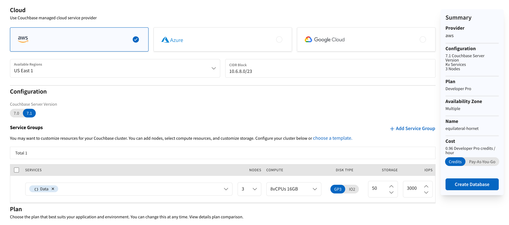

Create a Database
Create a database to store and access data in Couchbase Capella.
This page walks you through the process of creating a Couchbase Capella database. If you want to learn how to modify an existing Capella database, see Modify a Database.
| To create and connect to a free 30-day Capella trial, see Get Started with Couchbase Capella. |
Prerequisites
|
Permissions Required
You must have the Project Owner or Project manager project role.
|
-
You must create a project before you can create a database.
-
If you’re using a free trial, you cannot create more than one database, and the configuration options are limited.
Procedure
-
Select your project from the
Projectslist, then select the Databases tab. (This may be preselected for you if this is the first time you’ve entered the database screen.) -
Click Create Database
This action opens the Create Database page.
 -
Choose your preferred Cloud Service Provider.
Your choice of cloud provider affects the configuration options for your database, the geographic location of where you can deploy your database, and its operation costs.
For details on the cloud service providers supported by Capella, see:
-
Select a Region and CIDR Block.
You can deploy databases hosted by Couchbase to select regions in your chosen cloud provider.
-
Using the Available Regions drop-down menu, choose the region where you want to create this database. Select regions are available for Google Cloud and AWS.
-
In the CIDR Block field, enter an IP range in CIDR notation. In most cases, you can accept the default CIDR block.
-
-
Select a Configuration.
You can select Couchbase Server 7.0 or Couchbase Server 7.1 for the backend server for your database. The recommended default is
7.1 -
Configure the Service Groups
In this section, you can configure the services and resources available to your database.
- Templates
-
Open the Configuration Templates flyout by clicking the choose a template link near the top of the Configuration area. This flyout provides a menu of template options that you can apply to your database.
Database templates provide pre-defined database configurations that are based on common workloads. Each template has a variety of different sizes, and selecting one will populate the entire database configuration for you.
Read more about how to use templates.
- Custom Deployments
-
You can create custom configurations that provide more granular control over sizing and service functionality. This option works well if you already have experience with Couchbase Server or want to re-create an existing Couchbase deployment using Couchbase Capella.
-
Select the Services.
In a Capella, you assign Couchbase Server services to service groups. Service groups allow you to create node configurations for specified services. During the database creation process, a new database automatically has one service group with the Data Service (a required service).
You can add more services to an existing group by clicking the service group’s drop-down menu and selecting the services you require. Alternatively, you can add more service groups by clicking Add Service Group.
-
Select the number of Nodes.
Configure each service group with a node quantity. Individual service groups can have between 2 and 27 nodes but cannot collectively exceed 27 in a database. The service group that includes the Data Service requires at least 3 nodes and must be a multiple of 3 when using multiple availability zones.
-
Select the Compute.
Provide each service group with compute instance type. A selected compute option dictates the number of vCPUs and memory provisioned for each node in a service group. Compute options depend on the chosen cloud provider.
-
Select the Disk Type.
-
AWS: Choose between GP3 or IO2.
-
GCP: PD-SSD only.
-
-
Select the Storage.
In each service group, enter the amount of storage your database needs per node.
-
Select the IOPS.
-
AWS: Enter the IOPS for each service group.
-
GCP: IOPS is not directly configurable. It’s set based on the amount of storage you’ve assigned to a service group (30 read and 30 write IOPS per GB).
-
-
-
Choose a Plan.
All databases in an organization must be on a Service Plan. The Service Plan determines the level of support a database can receive and what features and services it can support. While you can upgrade or downgrade the chosen plan for a given database, using a feature that is specific to a plan may prevent a downgrade. If you are using a free trial of Couchbase Capella, only the Basic Service Plan is available.
For more information on Capella’s support levels, see the Capella Cloud Service Support Policy. If you have chosen the Developer Pro or Enterprise plans, you must select a Support Time Zone. You should include factors such as when database administrators can interact with Couchbase Support staff when choosing this setting.
-
Choose an Availability option.
You have the option to have all database nodes in the same availability zone or distributed across multiple availability zones. In most cases, you can accept the default Multiple Availability Zones setting as it offers the highest availability.
-
Review your Database’s configuration.
With the new database configuration options now set, it’s ready to deploy. Review the summary of the new database configuration and its hourly cost in the pane on the right side of the page to ensure it meets your expectations.
While you can change many database configuration options after deployment, there are some that you cannot. For a list of the configuration changes you can make to a deployed Capella database, see Modify a Database - Change Options. -
Deploy your database.
Once you’re satisfied with the configuration, choose between the Credits and Pay-As-You-Go billing options, then click Deploy
Capella will proceed with automatically deploying the database to your chosen cloud provider and region. This process will generally take up to 5 minutes to deploy, though it can take longer depending on certain factors such as database size and cloud provider performance. Leaving the Configuring Your Database page will not affect deployment progress; feel free to return to the database page at any time. You’ll receive a notification when the deployment is done.
When returning to your database after it has successfully deployed, you will see the database’s Metrics tab.